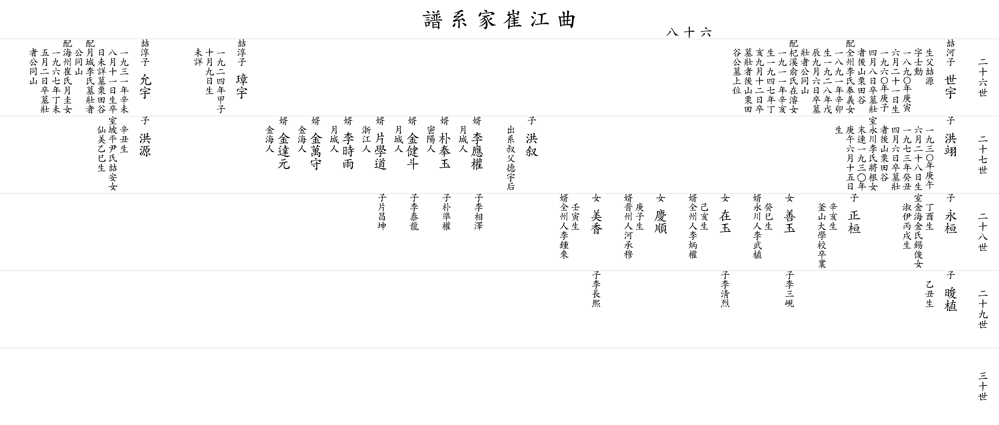

| 곡 강 최 가 계 보 |
| 이전☜ 쪽 68 ☞다음 |
| 26세 |
▲ 계자 세우 世宇 |
아버지 ▲철하 (喆河)의 아들 생부 철원(喆源), 자 사훈(士勳) 1890년庚寅) 6월 21일생, 1960년(庚子) 4월 8일 별세 묘 장자 뒷산 율전곡(栗田谷) 큰 할머니 전주이씨 봉의(奉義)의 따님 1891년(辛卯)생, 1928년(戊辰) 9월 6일 별세 묘 장자 공동산 둘째 할머니 기계유씨 재준(在濬)위 따님, 1911년(辛亥)생, 1947년(丁亥) 9월 12일 별세 묘 장자 뒷산 율전곡(栗田谷) 할아버지 묘 위쪽 사위 월성인 이응권(李應權) 외손 상택(相澤), 밀양인 박봉옥(朴奉玉) 외손 준권(準權) 사위 월성인 김건두(金健斗) 외손 태룡(泰龍), 사위 절강인 편학도(片學道) 외손 창곤(昌坤) 사위 월성인 이시우(李時雨), 김해인 김만수(金萬守), 사위 김해인 김달원(金達元) |
▲ 장우 璋宇 |
아버지 ▲철순 (喆淳)의 맏아들 1924년(甲子) 10월 9일생 졸일 미상 |
▲ 윤우 允宇 |
아버지 철순 (喆淳)의 둘째 아들 1931년(辛未) 8월 11일생 졸일 미상 묘 율전곡(栗田谷) 큰 할머니 월성이씨 묘 장자 공동산 둘째 할머니 해주최씨 월규(月圭)의 따님 1967년(丁未) 5월 2일 별세 묘 장자 공동산 |
||||
| 27세 |
홍익 洪翊 |
1930년(庚午) 6월 28일생 1973년(癸丑) 4월 6일 별세 묘 장자 뒷산 율전곡(栗田谷) 아내 영천이씨 장근(將根)의 따님 말련(末連) 1030년(庚午) 6월 15일생 딸 선옥(善玉) 계사생 사위 영천인 이무식(李武植) 외손 삼현(三峴) 딸 재옥(在玉) 기해생 사위 전주인 이병권(李炳權) 외손 청렬(淸烈) 딸 경순(慶順) 경자생 사위 진주인 하승목(河承穆) 딸 미향(美香) 임인생 사위 전주인 이종래(李鍾來) 외손 장희(長熙) |
홍서 洪叙 |
숙부 덕우(德宇)의 후계를 이음 |
홍원 洪源 |
신축생 아내 파평윤씨 철안(喆安)의 따님 선미(仙美) 을사생 |
||||
| 28세 |
영환 永桓 |
정유생 아내 김해김씨 석준(錫俊)의 따님 숙이(淑伊) 병술생 |
정환 正桓 |
신해생 부산대학교 졸업 |
||||||
| 29세 |
준식 晙植 |
을축생 | ||||||||
| 30세 | ||||||||||
| 이전☜ 쪽 68 ☞다음 |
|  |